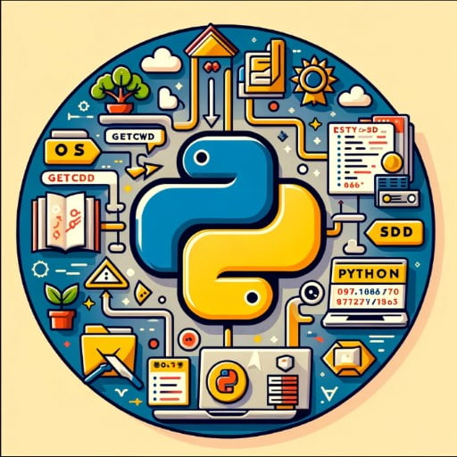

Imagina que quieres enseñarle a tu computadora a hacer algo, como jugar un juego o resolver un problema matemático.
Para hacer eso, necesitas hablarle en un idioma que ella entienda. Ese idioma se llama "lenguaje de programación".
Es una manera especial de dar instrucciones a la computadora para que haga cosas.
¿Por qué son importantes los lenguajes de programación?
Crear Juegos Divertidos: Muchos de los juegos que disfrutas en tu computadora, tablet o consola de videojuegos son creados usando lenguajes de programación.
Juegos como Minecraft, Roblox y Fortnite fueron creados gracias a que los programadores usaron lenguajes especiales para dar vida a esos mundos.
Aplicaciones y Herramientas Útiles:Las aplicaciones que usamos todos los días, como las que te ayudan a aprender matemáticas,
las que te permiten chatear con tus amigos o las que te muestran videos divertidos,
también son creadas con lenguajes de programación.
Resolver Problemas: Los lenguajes de programación nos ayudan a resolver problemas complejos de manera rápida y eficiente. Por ejemplo,
pueden ayudar a los científicos a predecir el clima o a los médicos a encontrar nuevas curas para enfermedades.
Comunicación Global: Gracias a los lenguajes de programación, podemos comunicarnos con personas de todo el mundo,
compartir fotos, videos y mensajes al instante.
Creatividad e Innovación: Programar es como ser un inventor. Puedes crear lo que imagines: un robot que haga tareas,
una página web para mostrar tus dibujos o una aplicación que ayude a cuidar el medio ambiente.
¿Qué lenguajes de programación pueden aprender los niños?
Scratch: Es un lenguaje de programación muy divertido y colorido que usa bloques en lugar de texto.
Es perfecto para empezar porque puedes crear historias interactivas, juegos y animaciones fácilmente.
Python: Es un lenguaje muy popular y fácil de aprender. Muchas personas lo usan para crear juegos,
aplicaciones y hasta para controlar robots. Tiene una sintaxis (forma de escribir) muy sencilla.

Blockly: Similar a Scratch, usa bloques para enseñar los conceptos básicos de la programación. Es muy visual y fácil de entender.
JavaScript: Este lenguaje se usa mucho para hacer que las páginas web sean interactivas.
Con JavaScript, puedes crear efectos divertidos en una página web, como animaciones y juegos.